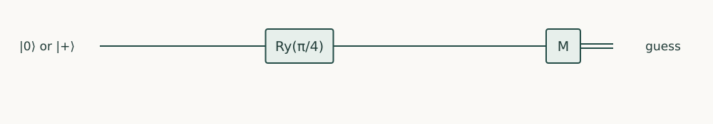

Quantum Information · Chapter 8 · Draft lesson
State Discrimination
How well can we identify a state chosen from known alternatives?
Chapter direction
Starting point: Chapters 2–7; trace distance is introduced through decision probabilities.
Anchor example: Distinguish two nonorthogonal qubit states with specified prior probabilities.
This lesson includes explanations, worked examples, and problems with solutions. Advanced results whose proofs are outside the chapter are identified explicitly.
8.1 Discrimination Tasks
Alice chooses zero or plus with equal probability. Bob knows the two possibilities but receives only one qubit. A computational-basis measurement is useful, yet it is not the best possible decision procedure.
8.1.1 Priors, decisions, and error
Let the labels be 0 for |0〉 and 1 for |+〉. Measuring Z and guessing 0 after outcome zero, 1 after outcome one succeeds with probability 1/2+1/4=3/4. Always guessing either label succeeds only one half. The prior distribution and whether wrong or inconclusive answers are permitted define the optimization problem.
8.1.2 Orthogonal and nonorthogonal alternatives
The overlap is \(s=|\braket0+|=1/\sqrt2\). Orthogonal states have zero overlap and can be separated by a projective measurement with certainty. These two are nonorthogonal. A perfect distinguishing measurement would have to assign contradictory probabilities to their shared component. The quantitative optimum below shows the unavoidable error rather than merely declaring the states “similar.”
Problem 8.1. Compare the Z strategy’s error with the optimal error.
Worked solution
The Z error is 1/4; the optimum is (1−1/√2)/2≈0.1464. Changing the measurement basis improves performance without changing the encoding.
8.2 Optimal Strategies
8.2.1 Minimum-error discrimination
For two density operators with priors p0,p1, guessing zero on effect E gives success \(p_1+\mathrm{tr}[E(p_0\rho_0-p_1\rho_1)]\). Diagonalize the Hermitian difference Δ. Choosing E as the projector onto its positive-eigenvalue directions maximizes the trace, because each direction can receive a weight between zero and one. The optimum is \((1+\|\Delta\|_1)/2\), where the trace norm sums absolute eigenvalues for a Hermitian matrix. For equal-prior zero and plus, Δ=(Z−X)/4 has eigenvalues ±1/(2√2), giving success \((1+1/\sqrt2)/2\approx0.8536\). The zero-guess direction is \(\cos(\pi/8)\ket0-\sin(\pi/8)\ket1\).
8.2.2 Unambiguous discrimination and inconclusive results
If mistakes are forbidden but “inconclusive” is allowed, use \(E_0=c\ket-\bra-\), \(E_1=c\ket1\bra1\), and \(E_?=I-E_0-E_1\), with \(c=1/(1+1/\sqrt2)\). E0 never fires on plus and E1 never fires on zero. The chosen c makes the remainder positive. Each input has conclusive probability c/2=1−1/√2; the rest is inconclusive. For two equal-prior pure states this success 1−s is optimal; this optimality is a theorem beyond verifying the explicit effects.
Problem 8.2. Why does E0 give no false identification on plus?
Worked solution
Minus is orthogonal to plus, so 〈+|E0|+〉=0. Positivity ensures this is a valid zero probability, not cancellation between negative probabilities.

8.3 Accessible Information
8.3.1 Measurements on encoded messages
For an encoding ensemble \(\{p_x,\rho_x\}\) and chosen POVM, the classical joint distribution is \(p(x,y)=p_x\mathrm{tr}(E_y\rho_x)\). Its mutual information is \(I(X:Y)=\sum_{x,y}p(x,y)\log_2[p(x,y)/(p(x)p(y))]\). This measures how much the outcome reduces uncertainty about the label on average. Maximizing it over measurements defines accessible information. Maximizing decision success and maximizing mutual information need not be the same optimization.
8.3.2 Bounds on classical information extraction
A finite-dimensional quantum carrier does not offer unrestricted access to all continuous amplitude parameters in a single shot. Entropy gives a bound on accessible classical information, called the Holevo bound, which we will state after constructing quantum entropy in Chapter 11. Here the operational calculation is already explicit: choose an effect, obtain conditional probabilities, and evaluate the task’s score. Repeated independent copies provide a different resource and can improve discrimination.
Problem 8.3. If one state has prior 0.99, is a fair guess the right baseline?
Worked solution
No. Always guessing the common state already succeeds with probability 0.99. Any claimed improvement must use the specified priors.
The distinction between orthogonal and nonorthogonal inputs also limits copying, broadcasting, and signalling.
Sources and further study: Watrous, The Theory of Quantum Information, discrimination.